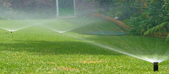

Sistema de riego por aspersion
¿Qué es un sistema de riego por aspersion?
El sistema de riego por aspersión es uno de los múltiples métodos de riego de cultivos que
existen
en la actualidad. Consiste en aplicar el agua imitando la lluvia, es decir, mediante un
chorro de
agua pulverizada en gotas. El mecanismo funciona a través de una red de tuberías que
transporta el
agua hasta los aspersores, los cuales utilizan presión para dispararla. El riego como tal es
potenciado a través de un sistema de bombeo.
Con este mecanismo es posible alcanzar eficiencias de aplicación entre 80 y 85 %, donde lo
ideal es
realizar una óptima inversión para lograr los objetivos propuestos y así los cultivos
comiencen a
crecer.
Además, debe saber que al implementar este sistema de riego por aspersión incluso llega a
los
rincones más profundos de su cosecha, de forma tal que todo el terreno esté cubierto lo más
homogéneamente posible. Por lo general, las tuberías que componen el sistema van enterradas.
Adicional, se compone de tomas de agua o hidrantes, ramales de aspersión y los aspersores
como tal.
Por eso, se considera uno de los mejores mecanismos para las superficies de gran producción.
Beneficios
1. Debido a que el sistema de riego por aspersión imita a la lluvia, la calidad de la
entrega de agua a los cultivos es mucho mejor que con algunos de los otros sistemas de
riego.
2.Ahorro en mano de obra. Una vez puesto en marcha no necesita especial atención puesto
que existen programadores activados por electroválvulas conectadas a un reloj que, por
sectores y por tiempos, activarán el sistema según las necesidades previamente programadas.
Con lo cual la mano de obra es prácticamente inexistente.
3. Es bien sabido que los sistemas de riego por aspersión presentan un menor consumo de
agua que, por ejemplo, los sistemas de riego por inundación.
4. Adaptación al terreno. Se puede aplicar tanto a terrenos lisos como a los ondulados,
no es necesario el allanamiento ni preparación de las tierras. Esto facilita la mecanización
del sistema.
5. La eficiencia del riego por aspersión es de un 80 % frente al 50 % en los riegos por
inundación tradicionales, como ya lo mencionamos con anterioridad.
6. Especialmente útil para distintas clases de suelos ya que permite riegos frecuentes y
poco abundantes en superficies poco permeables.
